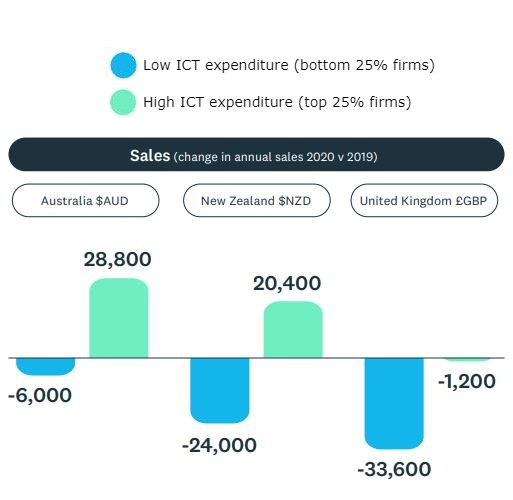

House keeping:
With our guest AI Copilot,
Yoda to help us on our journey.
OpenAI and Jasper.ai covered 1000's of content, article and web pages for me while we waited for the results to show up in 30-60s.
Need ideas for your next article - check out Jasper.ai
Need to generate a spreadsheet based on data from the internet - check out OpenAI playground
Human + AI research combined
You might already be using these apps everyday and be bored by the results.. And that's OK, I understand.
What if I told you it's not these apps on their own that are awesome... but it's the connected ecosystem that really let's you turbo drive your productivity.
|  |

|
Easiest project management tool with great UX, high functionality to create & manage projects with deliverables, milstones & team notifications.
🔥 Power it up with InstaGANTT if you are working on a client plan to produce a timeline, campaign chart & workload analysers to stop missing deadlines.
Score: 9.5 out of 10
Paying users: 5 million
Collaborative task management tool, with a focus on boards for tasks.
Say you have a service agreement with your client and need a quick ticketing system to manage requests, a Trello board plus BUTLER auto-allocate tickets to the right queue, track a checklist of steps to complete and keep a work log of history on the job until it's done.
Score: 9.4 out of 10
Paying users: 4 million
Communication tool for teams to collaborate and communicate
in real-time.
Eg. We are on our way back from a client meeting on site and need to update a colleague on the WIP. Sarah updates Eleni via Teams on what happened in WIP, so Eleni is up-to-speed for her meeting in 30 minutes.
With Viva, your experts in your team can own topics and be the "go to person" to break down silos and increase knowledge sharing.
Score: 9.2 out of 10
Paying users: 25 million (comb.)
Collaborative task management with best-of-breed dashboards & communication updates plus
real-time status updates.
Running a WIP meeting soon? With Monday.com you can keep things high level and run your WIP easily with visual quick updates + colour coded traffic lights.
Eg. Eleni needs to send ad campaign reports to her clients every time a campaign finishes. Using Monday automation, she triggers a report to be sent to her client every time her TikTok ads move from "In Progress" to "Done".
Score: 9.1 out of 10
Paying users: 2 million
Time management & tracking tool whose goal is maximising
focused time blocks.
Eg. Adam get's back from client site and needs to punch out a whole lot of code before 5pm.
With RescueTime, he sets up a focus session, and the RescueTime app blocks unproductive websites while positively reinforcing his mental health and wellbeing by starting with some exercise, breathing techniques and a desk de-clutter.
** lord knows that coffee cup has been there for weeks
Score: 8.7 out of 10
Paying users: 1 million
A really cool concept to try and keep us off our phones 24/7, Forest promotes
strong focus and you are rewarded with a tree that grows over time.
The longer you focus, the more of a "forest you grow".. and if you turn off the app, your trees die... as does your pride.
If you plant enough trees, then "Trees for the Future", a non-profit will help plant real trees on sustainable land to grow more vibrant communities in growing nations.
A habit tracker with a gamification around
filling in the blocks.
To get a bit more work-life balance you might find this helps with your everyday goals and rewarding yourself when you hit those streaks!!
If you are creating content like blogs, newsletters, client mail outs and need a bit of creative inspiration, then the new AI system, Dall-E2 is considered
cutting-edge tech for 2022 and beyond!
It doesn't replace a graphic designer... but it really helps with creating a starting point to shop out with the team for feedback.
The tech behind this is oustanding... some say it's finally reached a "general level of AI" previously unseen.
Would you like to see Dall-E2 in action?